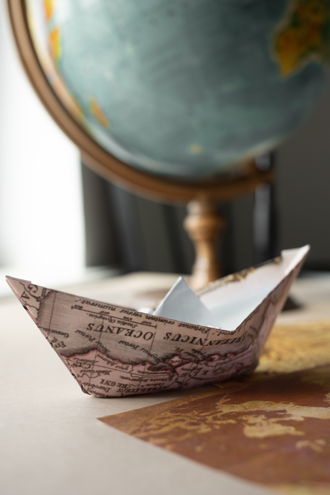

Writing a comprehensive history of paper folding is almost impossible,
since information about the art form prior to the 15th century is
virtually nonexistent. There are many plausible assertions about its
origins and early history, but most of those are based on little firm
documentation. Many studies assert that origami was invented by the
Japanese about a thousand years ago, but its roots may well be in China.
It is also highly probable that the process of folding was applied to
other materials before paper was invented, so the origins of
recreational folding may lie with cloth or leather. Certainly, within
Europe, the practise of napkin folding and cloth pleating were held in
high esteem. However, paper has proved to be the ideal material to fold,
and so it is logical to assume that paper folding followed the discovery
of the papermaking process.
Today, many people are attracted to the idea of learning how to fold
origami figures because paper is a cheap craft supply. When origami
was first practiced, however, it was a craft only for the elite.
Japanese monks folded origami figures for religious purposes. Origami
was also used in various formal ceremonies, such as the practice of
folding paper butterflies to adorn sake bottles at a Japanese couple's
wedding reception. Tsutsumi, folded paper gift wrappers, were used in
some ceremonies to symbolize sincerity and purity. Tsuki, folded
pieces of paper accompanying a valuable gift, are another example of
ceremonial paper folding since these models would act as a certificate
of authenticity. As paper became more affordable, common people began
making origami figures as gifts or creating folded cards and envelopes
for their correspondence. Origami also started to be used as an
educational tool, since the folding process involves many concepts
that are relevant to the study of mathematics. The first book about
origami was Sembazuru Orikata (Thousand Crane Folding) written by
Akisato Rito and published in 1797. This book was more about cultural
customs than a series of instructions, however. There is a traditional
story in Japan that says if a person folds 1,000 paper cranes, they
will be granted one special wish.
Fun Fact Although origami is typically associated with Japan, paper
folding became popular in Europe, too. In Spain, the practice is
called papiroflexia or pajarita.

Fun Fact Although origami is typically associated with Japan, paper
folding became popular in Europe, too. In Spain, the practice is
called papiroflexia or pajarita.